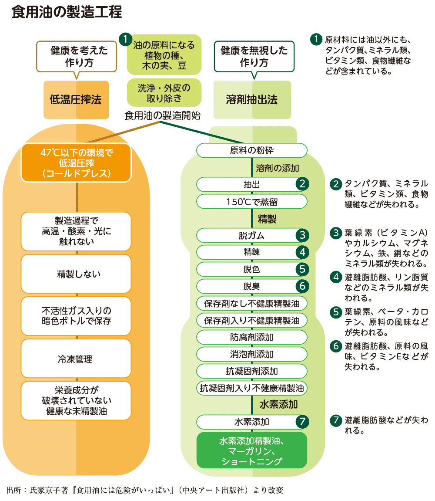
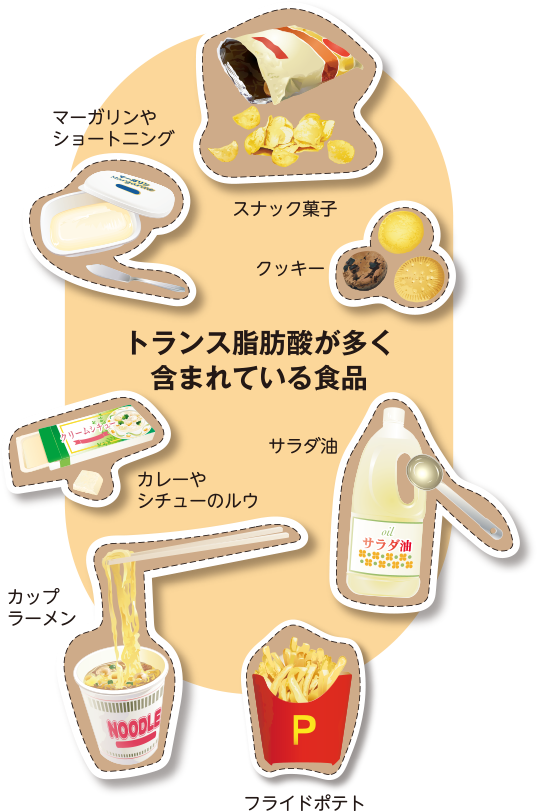
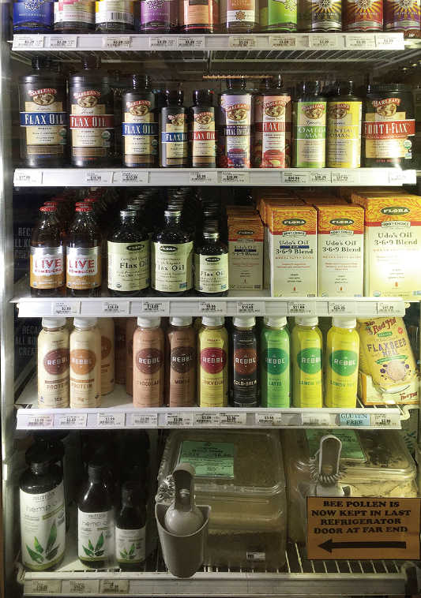

<!doctype html>
<html>
<head>
<meta charset="utf-8">
<title>【読みもの】質の良い油を選んでいますか？</title>
<meta name="description" content="【読みもの】質の良い油を選んでいますか？">
<meta name="keywords" content="【読みもの】質の良い油を選んでいますか？">
<meta name="viewport" content="width=device-width, initial-scale=1, maximum-scale=1, user-scalable=no">
<!--<link rel="icon" href="favicon.ico">
<link rel="canonical" href="https://">
<link rel="alternate" type="application/rss+xml" title="ROR" href="./sitemap.xml">-->
<link rel="stylesheet" href="../../css/1803.css">
</head>

<body class="TOKU1803">
<div id="wrap">

<p class="right"></p>
<p class="flower"></p>

<header>
<h1>
<span class="spnone"></span>
<span class="pcnone"></span>
</h1>
<div class="intoroduction">
世の中にたくさんある油の中で、健康に役立つものを摂りたい、どの成分がからだに良いのか、などについて考えながら商品を選んでいる方も多いと思います。では、その油はどのように作られているか知っていますか？ 「よい日々」創刊号では、製造方法で大きく異なる油の品質、栄養素などについてお伝えします。食生活・医学ジャーナリストとして精力的に活動し、海外の健康情報にも詳しい氏家京子さんにご寄稿いただきました。
 </div>
</header>

<article>

<section>
<h2>食文化の進化がからだを悪くさせる!?</h2>
<div class="multiple">
<div class="coll">
<p>私と同じくジャーナリスト業を営む夫が興奮して読みふけっていたハーバード大学教授ダニエル・Ｅ・リーバーマンの『人体６００万年史』。「人間の進化と健康と病」をていねいに考察した大作で、盗み読みした私もすっかり虜になりました。</p>
<p>「私たちは今も進化しつづけている。ただし…生物学的進化ではなく、文化的進化である…文化的進化では、人間が作り出した新しい考えや行動が…とくに私たちの食べる食物と、私たちのする（あるいはしない）活動が、ときに体の具合を悪くさせるのだ」。<b><a href="#note01">※注１</a></b></p>
<p>人体のゆっくりとした進化は巨大な脳が生むスピーディーな文化的進化に追いつけず対応できないはずだし、想定外の食物が入ってくるから身体は故障する…。日々うっすらと感じていたことが学問的に論じられていました。これは予防可能なある種のがん、２型糖尿病、骨粗鬆症、心臓病、脳卒中、腎臓病、一部のアレルギー、認知症、うつ病、不安障害、不眠症などに苦しむ現代人の生き残りに関わるシビアなテーマです。</p>
<p>私たちは皆、１日に何度かの食事をします。もし、<u>食物を有利に使って健康な身体にしたいなら、生物学的進化に対応していて、文化的進化のデメリットを持たない食物を優先するのが健康に良い食事</u>となります。そこで今回は、私たちの健康に良い食用油を決めるファクター（条件）についてお伝えします。
</p>
</div>
</div>
</section>

<section>
<h2>かつて食用油は生鮮食品だった</h2>
<div class="multiple">
<div class="coll">
<p>食用油って、どんなふうに作られているかをご存知ですか？</p>
<p>二十世紀初頭まで油屋さんは世界のどこでも小規模な家内工業でした。小さな町や村には、必ずその住民が使う油を植物のタネや木の実などから搾る油屋さんがいて、熱が発生しにくいよう材料を少量ずつ圧し潰して油を取り出し、新鮮なうちにガラス小瓶に分け、家々を廻って販売していました。<b><a href="#note02">※注2</a></b></p>
<p>油は、光・酸素・熱にさらされると「悪く」なります。</p>
<p>油が「悪くなる」のは、化学変化で別なものに変わり始めるから。油の栄養分子は、光・酸素・熱と化学反応します。じつは反応性の高い栄養分子を豊富に含むことが、油の芳醇な香りとフレーバー、カラフルな天然色、そして、癒し効果など、油にしかない長所を作っています。<u>むかしの人は「良い油ほど早く不味くなる」と経験的に知っていたので、油の長所を損なわぬよう「少量で買い、新鮮なうちに使い切る」習慣がありました。</u>ほとんどの食用油はまぎれもなく生鮮食品でした。</p>
</div>
</div>
</section>

<section>
<h2>製造方法で失われる油の価値</h2>
<div class="coll_img">

</div>
<div class="multiple">
<div class="coll">
<p>ところが１９２０年代以降、食品産業では大量生産時代に突入し、油の搾り方にも革命が起こりました。「いっぺんにたくさん作り、それを長期間売り続ける」効率化が図られ、油は生鮮食品だからこそ持っていた長所を失い、その価値と引き換えに、長い間放っておいても悪くならない加工食品になりました。</p>
<p>具体的には、農薬・化学肥料・遺伝子組み換え技術を使って原材料を大量生産することから始まり、原材料の油分に含まれる反応性の高い、それだけに健康効果も大きい、必須脂肪酸の「オメガ３脂肪酸」と「オメガ６脂肪酸」が加工工程の最初に除去されるようになりました。「反応性が高い栄養分子は悪くなりやすい」からです。ほかにも、変色や異臭を防止するために植物ステロール、ビタミンＥ、カロテン、クロロフィル、複数のミネラル類など大切な栄養成分が除去されるようになりました。</p>
<p>効率化を優先する食用油の加工では栄養分子の除去だけでなく、加えるものもあります。油の材料になる植物のタネや木の実から油分を簡単に溶かし出すため、ガソリン様化学溶剤を使うようになりました。もちろん、そのように作られた食用油はお店に並ぶ前に危険物質をろ過し、揮発させていますが、加工前の油にあった癒し効果を持つ栄養分子はすでになく、色と香りを失い、単にとろみだけが残った特徴のない透明な液体になり、光・酸素・熱にさらされてもビクともせず長期間商品棚に鎮座しています。</p>
</div>
</div>
</section>

<section>
<h2>もう一つのデメリット、トランス脂肪酸</h2>
<div class="multiple">
<div class="col">
<p><u>マーガリンやショートニングはもともと液体の植物性油を固形バターの代用品にする目的で栄養分子をわざと変形させて作ります。このときにたくさんできてしまうのがトランス脂肪酸で、たとえば、悪玉コレステロール（LDL）を増やす、善玉コレステロール（HDL）を減らす、動脈硬化などによる虚血性心疾患のリスクを増やす、メタボリックシンドロームの因子及び糖尿病のリスクを高めることがわかっています。</u></p>
<p>これからは、パン、ケーキ、クッキー、コーヒー用ミルク、マヨネーズなど加工食品のパッケージに注意してみてください。ヨーロッパではすでに多くの国が食品業者による使用を制限し、アメリカでも今年の６月、カナダでは9月から食品業者への使用が制限され含有量の明記が義務付けられるトランス脂肪酸ですが、日本ではまだ食品業者側の規制がありません。食べる消費者側で「脂質の過剰摂取を控えるよう」「栄養バランスの良い食事を心がけましょう」と厚生労働省では発表しています。<b><a href="#note03">※注3</a></b></p>
</div>
<div class="col_img">

<span class="col_span">
これらの食品を日常的に食べていると、気が付かない間に、トランス脂肪酸を取り過ぎている可能性があります。
</span>
</div>
</div>
</section>

<section>
<h2>私たちに必要な油は、新鮮で大切な栄養素が残っているもの</h2>
<div class="multiple">
<div class="col_img">

<span class="col_span">
アメリカ合衆国カリフォルニア州サンディエゴの自然食品店の冷蔵棚にはさまざまな種類の食用油が陳列。フローラの『ウドズオイル』も販売されていました。
</span>
</div>
<div class="col">
<p><u>食用油製造の効率化で除去される栄養、とくに必須脂肪酸の「オメガ３脂肪酸」と「オメガ６脂肪酸」は、新鮮な状態で私たちが食べるとすみやかに吸収され、全身のすべての細胞の細胞膜を作り、ホルモンの材料になり、呼吸や代謝を円滑に進めてエネルギーを生み出してくれる、命に直結する大切なものです。</u></p>
<p>近年、日本の厚生労働省や農林水産省でも、とくに「オメガ３系脂肪酸」の目標下限摂取量を公表しているのは、食品加工の途中でこの大切な栄養が除去され皆の気づかぬうちに口に入らなくなってしまったからです。私たちは文化的進化を享受する一方で、知らぬ間に特定の種類の栄養欠乏を引き起こしています。</p>
<p>たとえば、「オメガ３脂肪酸」は冠動脈疾患の予防効果（αリノレン酸、EPA、DHA）、脳梗塞、加齢黄斑変性症の予防効果（EPA、DHA）が認められています。さらに、子どもは「オメガ３脂肪酸」が不足すると皮膚炎などの欠乏症が見られるので摂取目安量が定められるようになりました。
<b><a href="#note04">※注4</a></b>
</p>
</div>
</div>

<div class="multiple pcminus60">
<div class="coll">
<p>思いがけない栄養欠乏を経験した反省から、今では効率化よりも消費者の健康と癒しを優先する食用油メーカーやブランドが世界的に認知されてきています。原材料は無農薬で栽培し、光・酸素・熱による劣化を起こさない搾油技術が開発されているので注目しましょう。</p>
<p>「私たち人間は、健康になるように進化したのではない…何を食べ、どれだけ運動するかについて、合理的な選択ができるようには進化していない…私たちが慢性病にかかるのは、人間が進化の過程でしてきた行動を、身体があまりよく適応していない条件のもとでやってしまうからであり、しかも私たちがそれらの条件をそのまま子供たちに受け渡すので、子供もまた同じ病にかかってしまうのだ。この悪循環を断ち切りたいなら…もっと健康を増進する食物を食べること…」。<b><a href="#note05">※注5</a></b></p>
<p>「スーパーで売っているから大丈夫でしょう？」と考える時代はもう過ぎてしまいました。</p>
</div>
</div>
</section>


<section>
<h2>まとめ</h2>
<div class="matome">
<ul>
<li><b>●</b> 原材料のタネや植物は無農薬やオーガニックで栽培されたもの</li>
<li><b>●</b> 低温圧搾法で作られたもの</li>
<li><b>●</b> 高温、酸素、光に触れないように製造・保管されているもの</li>
<li><b>●</b> 賞味期限が長すぎないもの</li>
<li><b>●</b> 必須脂肪酸の「オメガ３」「オメガ６」は鮮度が命、冷蔵または冷凍での保管が必須</li>
</ul>
</div>
</section>


<section>
<div class="note">
<ul>
<li id="note01"><b>注１</b>…『人体600万年史　科学が明かす進化・健康・疾病　上巻』ダニエル・Ｅ・リーバーマン著、ハヤカワノンフィクション文庫、17ページ</li>
<li id="note02"><b>注２</b>…『FATS THAT HEAL FATS THAT KILL』ウド・エラスムス著、alive books、85ページ</li>
<li id="note03"><b>注３</b>… 内閣府食品安全委員会、トランス脂肪酸に関するファクトシート、<a href="http://www.fsc.go.jp/sonota/transfattyacids1902.html" target="_blank">http://www.fsc.go.jp/sonota/transfattyacids1902.html</a></li>
<li id="note04"><b>注４</b>… 農林水産省ホームページ、<a href="http://www.maff.go.jp/j/syouan/seisaku/trans_fat/t_eikyou/fat_eikyou.html" target="_blank">http://www.maff.go.jp/j/syouan/seisaku/trans_fat/t_eikyou/fat_eikyou.html</a></li>
<li id="note05"><b>注５</b>… 注１と同書、19ページ</li>
</ul>
</div>
</section>


<section class="instructor_introduction">

</section>


<section class="feature_summary">
<div class="staff"></div>
<p><span>どこのご家庭にもある食用油、調理には欠かせないものになっています。あまりにも身近すぎてその作り方を考えたこともないかもしれませんね。油は本来は生鮮食品で、私たちのからだに欠かせない栄養素が含まれていることを知っていれば、何を選び、何を摂るのが健康のために役立つのか、分かってくると思います。<br>
質の良い油を意識するようになると、からだに良くないものは自然と遠ざかっていきます。これは私の実体験です。（よい日々編集 竹村）</span></p>
</section>

</article>


</div>


<!--<footer>
<p class="copyright"> Copyright&copy;YOIHIBI All Rights Reserved.</p>
</footer>-->


</body>
</html>